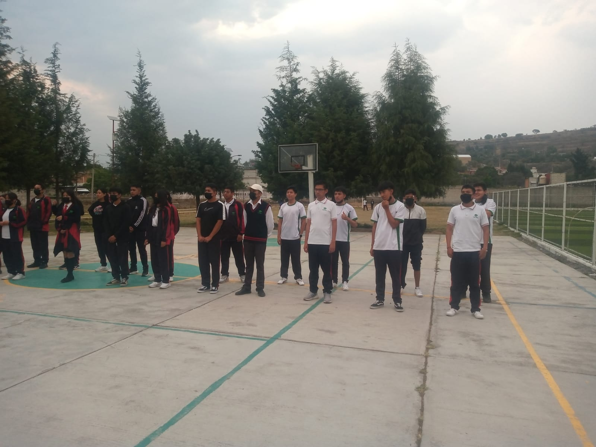

Integrantes del equipo:
Alexis Juárez Ruiz
Jarin Hazan Aleman Cobaxin
Jennifer Itzamar Vargas Inocente
Samantha Carreto Corte
Efren David Morales Gonzalez
Julissa Cisneros Peña
Grupo: 603
Fecha: 08/03/2023
Actividades
Primera actividad: Cabecitas
Nuestros compañeros Alexis y Jarin realizaron pases con cabezas para
formar ondas las cuales se parecen a las que producen las funciones
Seno y Coseno al ser graficadas.
Iniciaron con la actividad haciendo pases, al principio vieron que la distancia
y la fuerza no era suficiente así que decidieron implementar más fuerza
y disminuir su distancia, con esto hicieron una vez más la actividad dando así
a formar las ondas de seno y coseno.
Segunda actividad: Tangentes y Contangentes
En esta actividad que fue realizada por el equipo Alexis, Jarin, Jenny, Efren
y yo su servilleta Samantha, acomodamos las cuerdas como seria una
representación gráfica de una Tangente y Contangente.
Acomodamos las cuerdas las cuerdas como sería la Tangente y Cotangente,
movimos las cuerdas hasta por fin darle la forma que buscábamos.
Al final nos tomaron la foto donde aparecían las cuerdas de Tangente y Cotangente.

Como se puede ver en la imagen logramos formar la figura que forma
una Tangente y Cotangente al ser graficada.
Tercera actividad: Saltar la cuerda
La actividad se realizó con ayuda de Efren, Jenny y Samantha. En esta actividad
Efren y Jenny tomaron ambos extremos de la cuerda y Samantha se acercó para
saltar la cuerda, está creando ondas formando seno y coseno.
Identificación de razones y funciones trigonométricas.
Juegos Basquetbol y Futbol
Equipos
Equipo 1
Integrantes
- Julissa Cisneros Peña
- Efren David Morales Gonzalez
- Samantha Carreto Corte
Equipo 2
Integrantes
- Alexis Juárez Ruiz
- Jennifer Itzamar Vargas Inocente
- Jarin Hazan Aleman Cobaxin
Juego de Basquetbol
Explicación
La finalidad de este juego era jugar una versión de reloj modificada dentro de la cual
teníamos que en cada punto asegurar de formar un ángulo de 90 grados al tirar el
balón, esto lo teníamos que lograr utilizando el tablero y el cuadro como referencia
para el tiro, pero en el caso del tiro directamente abajo del tablero solo se tenía que
meter la canasta.
Esto fue con la finalidad de jugar un equipo contra el otro, con máximo 2 tiros por integrante,
esto siendo relevante el tema, ya que tenía que ver con los ángulos.
El compañero Efren

La compañera Julissa
La compañera Samantha

El compañero Alexis

Juego de Futbol
Explicación
La finalidad de este juego fue realizar un tipo de juego basado en penales
teníamos que asegurarnos que además de meter el Gol teníamos que hacerlo dándole
a uno de los 4 ángulos rectos(de 90 grados) de la portería para que se pudiera contar
como un punto para el equipo, cada integrante tenía oportunidad a 2 tiros máximo.
Esto fue con la finalidad, de hacer que dos equipos compitieran uno contra el otro
igual que en el otro juego del Basquetbol. Esto estaba relacionado con el tema
respectivo pudiendo identificar específicamente el tema de ángulos.
El compañero Efren

La compañera Julissa

La compañera Samantha
El compañero Alexis


El compañero Jarin
La compañera Jennifer

Resolución del triángulo rectángulo Mediante razones trigonométricas
Juego Calles y Avenidas
Integrantes del equipo:
Alexis Juárez Ruiz
Jarin Hazan Aleman Cobaxin
Jennifer Itzamar Vargas Inocente
Samantha Carreto Corte
Efren David Morales Gonzalez
Julissa Cisneros Peña
Grupo: 603
Fecha: 08/03/2023
Explicación del juego
La finalidad de este juego era en grupos 14 formar un cuadro con la misma
distancia entre integrantes para al escuchar las direcciones de uno de los
encargados decir "Calles" o "Avenidas" levantar los brazos y voltear a lado
adecuado, Calles viendo hacia adelante y Avenidas viendo hacia la derecha.
Esto para formar pasillos por los cuales tenían que pasar un "Ratero" y un
"Policia", su meta del Ratero es durar un minuto sin ser atrapado por el Policia
y la meta del Policía era atrapar al Ratero antes de que se acabara el minuto.
Como pasaba el tiempo el encargado daba una dirección para que se voltearan los
que estaban en el cuadro esto para impedir el paso de los dos compañeros corriendo
facilitando el escape del ratero o su captura dependiendo en la orientación de los
pasillos.


Juegos al Aire Libre
Integrantes del equipo:
Alexis Juárez Ruiz
Jarin Hazan Aleman Cobaxin
Jennifer Itzamar Vargas Inocente
Samantha Carreto Corte
Efren David Morales Gonzalez
Julissa Cisneros Peña
Grupo: 603
Fecha: 08/03/2023
Juego de formar figuras
Explicación del juego
En esta actividad nuestros compañeros nos explicaron la dinámica del primer
juego la cual consistía en correr hacia nuestros compañeros que se encontraban
al otro lado de la cancha en cuanto llegamos nos dieron el nombre de una figura
geométrica la cual debíamos de replicar con cualquier parte del cuerpo, una vez
que el equipo replicara la figura ganaba un punto cuando los dos equipos
terminaban ya no se podía replicar la figura geométrica, ni las partes del cuerpo
utilizadas.
La actividad fue realizada con el fin de formar ángulos los cuales se formaban
cuando las figuras eran replicadas con las partes del cuerpo de los participantes.
Juego Futbase
Explicación del juego
En esta actividad nuestros compañeros nos explicaron la dinámica del segundo
juego la cual consistía en jugar el juego de Futbase, el cual es parecido al
Beisbol donde un compañero lanza un balón hacia la pareja que va a correr,
ellos la tienen que patear sí que los que están en el campo la atrapen en el aire y
correr a las bases que fueron marcadas por el equipo sin ser tocados por el
balón, lo cual marcaría un out, 3 out's y se hacía cambio de equipo, el que estaba
pateando para al campo y el del campo pasa a patear si una pareja lograba dar la
vuelta por todas las bases y regresar a la base de donde se patea se lograba
una carrera, aquel equipo con más carreras ganaba el juego.
La actividad se realizaba con el fin de realizar curva, líneas y figuras que se
formaban al patear el balón, se lanzaba para realizar un out, pasar de una base
a otra y al completar una carrera.
Juegos de Memorama y Piramide humana
Integrantes del equipo:
Alexis Juárez Ruiz
Jarin Hazan Aleman Cobaxin
Jennifer Itzamar Vargas Inocente
Samantha Carreto Corte
Efren David Morales Gonzalez
Julissa Cisneros Peña
Grupo: 603
Fecha: 08/03/2023
Clasificacón de los ángulos
Juego de Memorama
Explicación
En la actividad del equipo de nuestros compañeros nos explicaron la dinámica
de la actividad la cual consistía en juntarnos de 2 equipos los cuales iban a
participar en una carrera la cual consistía en que un integrante por quipo fuera
pasando y correr de un extremo de la mochila de uno de nuestros compañeros
que organizaba la actividad después llegar a un pino corriendo cuando
llegáramos nos presentaron un memorama, cuando los integrantes del equipo
llegaran debían de revelar solo dos cartas la cuales contenían su ángulo y su
definición la cual debía de ser correcta si no lo era debía de regresar corriendo y
seguido de eso los integrantes iban a seguir corriendo hasta que ganaras el
juego el cual se ganaba con 3 ángulos descubiertos con sus definiciones.
Las imágenes de los integrantes se mostrarán seguido de la explicación.
Imagenes